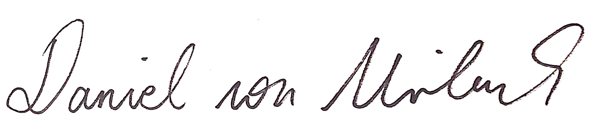

Hey,
mein Name ist Daniel und ich betreibe selbst bereits seit Jahren begeistert Kraftsport. Wie du sicher weißt, ist neben dem eigentlichen Training die Ernährung der wichtigste Erfolgsfaktor für den Erfolg im Gym!
Egal welches Ziel du verfolgst: Muskelaufbau, Diät und Fettverlust oder einfach nur gesünder zu leben, um eine Sache kommst du einfach nicht herum: Die passende Ernährung! Auch ich musste dies am Anfang meiner Fitness Karriere sehr schnell feststellen…
Wahrscheinlich kennst du das Gefühl: Du hast dir ein bestimmtes Ziel gesetzt, z.B. für den Sommer in Topform zu kommen, und suchst nun die passenden Lebensmittel für dein Ziel. Aber du stellst sehr schnell fest, dass es eine schier unglaubliche Menge an verschiedenen Diätlebensmitteln gibt. Du stellst dir zwangsläufig die Frage: Wie um alles in der Welt soll ich entscheiden, welches Whey Protein das Beste ist? Oder brauche ich überhaupt Supplements für mein Ziel? Wenn du an dieser Stelle frustriert aufgeben hast kann ich dich nur zu gut verstehen…
Genau aus diesem Grund habe ich Mister M entwickelt! Mister M soll dir helfen einen Überblick über die verschiedenen Lebensmittel zu gewinnen und das perfekte Produkt für dein Ziel auszuwählen.
Klingt zu schön, um wahr zu sein? Probiere es doch einfach kostenlos aus! Wenn dir etwas fehlt oder dir sonst etwas auf dem Herzen liegt, melde dich doch einfach unter: support@misterm-vergleich.de. Da wir noch am Anfang stehen freuen wir uns über jedes Feedback, um Mister M noch besser auf die Wünsche unserer Community zuschneiden zu können.
Viel Spaß mit Mister M wünscht,

Daniel von Mirbach (CEO Mister M)